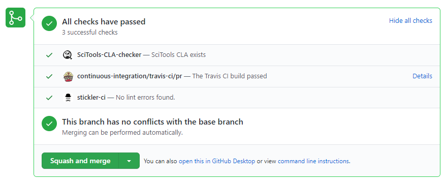

Continuous Integration (CI) Testing¶
The Iris GitHub repository is configured to run checks on the code automatically when a pull request is created, updated or merged against Iris master. The checks performed are:
SciTools CLA Checker¶
A bot that checks the user who created the pull request has signed the Contributor’s License Agreement (CLA). For more information on this this please see https://scitools.org.uk/organisation.html#governance
Stickler CI¶
Automatically enforces coding standards. The configuration file named .stickler.yml is in the Iris root directory. For more information see https://stickler-ci.com/.
Travis-CI¶
The unit and integration tests in Iris are an essential mechanism to ensure that the Iris code base is working as expected. Running the tests may be run manually but to ensure the checks are performed a continuous integration testing tool named travis-ci is used.
A travis-ci configuration file named .travis.yml is in the Iris repository which tells travis-ci what commands to run. The commands include retrieving the Iris code base and associated test files using conda and then running the tests. travis-ci allows for a matrix of tests to be performed to ensure that all expected variations test successfully.
The travis-ci tests are run automatically against the Iris master repository when a pull request is submitted, updated or merged.
GitHub Checklist¶
An example snapshot from a successful GitHub pull request shows all tests passing:
If any CI checks fail, then the pull request is unlikely to be merged to the Iris target branch by a core developer.